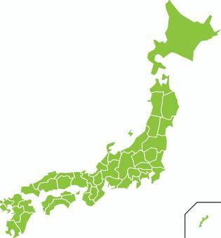
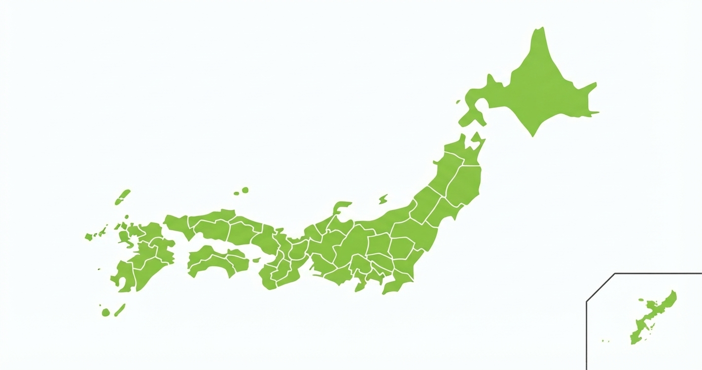

AI の働きを、私がすべて知っているなどと言うつもりは毛頭ありません。ただ、使い方はいろいろ工夫しています。今日もその一つがありました。
note に記事を出すとき、見出しに画像を一枚付けます。note の案内では、推奨の大きさは横1280・縦670ピクセル。横に長い枠です。
ところが、使いたかったのは日本地図でした。日本列島は北東から南西へ斜めに伸びているので、地図はどうしても縦長になります。縦長の絵を横長の枠に入れれば、小さく縮むか、上下がはみ出して切れてしまいます。

これまでなら、アドビのイラストレーターやフォトショップを開いて、自分で地図を回し、枠に合わせて切り抜き、書き出していました。慣れた作業とはいえ、ちょっとした手間です。
今回は、Google の Gemini に頼んでみました。頼んだ文は、これだけです。
「Noteのアイキャッチ画像枠に収まるように、地図を斜めにして、同時にPngフォーマットに変換してください」
返ってきたのが、この一枚です。

日本列島が斜めに寝かされ、横長の枠いっぱいに収まっています。沖縄は右下の小さな枠に入りました。大きさは横1424・縦752ピクセルで、note の推奨とほぼ同じ横長の比率です。形式も、頼んだとおり PNG になっていました。
振り返ると、頼み方に二つ工夫がありました。
一つは、何ピクセルにしてくれ、ではなく、どこに使うのかを伝えたことです。「Noteのアイキャッチ画像枠に収まるように」と言えば、枠の形を知っている相手なら、大きさも向きも自分で考えてくれます。
もう一つは、二つの用事を一度に頼んだことです。地図を傾けることと、PNG に変えること。人に頼むときと同じで、目的と仕上がりの形を先に言えば、やり取りは一回で済みます。
ただし、AI は画像を一から描き直していることがあります。島の形や県境が、元の地図とまったく同じとは限りません。使う前に元の地図と見比べるのは、頼んだ人の役目です。電さんとの仕事で、いつも「疑って確かめる」ようにしているのと同じです。
電さん（Anthropic の Claude）と一緒に仕事をするようになってから、こういう仕事も、電さんの仲間に振ってみることにしました。文章やプログラムは電さん、画像は Gemini、というように、得意な相手に分けて頼むのです。
以前、妻の動画を作る手伝いをしたことがあります。砂漠で踊る女性の静止画を一枚渡したところ、30秒の見事な動画ができあがりました。
方位予定帖も、同じ作り方でできています。私が欲しいものを言葉で話し、電さんが形にし、私が見て確かめる。その中には、今日の地図のような小さな技がたくさん詰まっています。
こうした技を一つずつ切り分けて、まだ AI に触ったことのない方にも試していただけるよう、連載にまとめていけたらと考えています。いずれは教材の形にできれば、と思っています。今日の一枚は、その最初の一話です。
牧正人史先生が昭和三十三年に発見された姓名科学の体系を、デジタルの形で遺す仕事を続けています。方位予定帖の暦も、この仕事の中から生まれました。
▶ 姓名科学の殿堂へ ▶ お名前を解析する